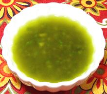

 |
Sherry VinaigretteSpain - Andlucia - Vinagreta de Jerez | ||||
| Makes: Effort: Sched: DoAhead: |
1 cup * 10 min Best |
Bringing the unique flavor of sherry wine vinegar, this recipe can be used for any Andelusian salad - or any other salad you might wish to use it for. | |||
|
|
1/3 1 3/4 2 3 1-1/2 1/2 1/4 |
c t c cl T T t t |
Sherry Vinegar (1) Dijon Mustard Olive Oil, ExtV Garlic Parsley Thyme, fresh (2) Salt Pepper |
Make - (10 min)
|